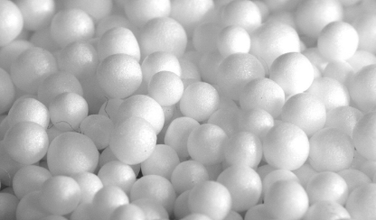

Izolacja
Domy Stosuje Metodę Dmuchania
Na czym polega ocieplanie poddasza metodą wdmuchiwania
Polega na wdmuchiwaniu pod ciśnieniem materiału izolacyjnego w postaci granulatu. Nadmuch umożliwia dotarcie materiału do nawet trudno dostępnych miejsc. Jeśli dostęp do samego poddasza jest utrudniony, to nie ma konieczności rozbierania jego zabudowy. Wystarczy wykonać w odpowiednich miejscach otwory i wdmuchiwać przez nie materiał izolacyjny. Opisany sposób umożliwia ocieplanie poddasza domów z płaskim, jak również tych ze skośnym dachem.

Absorpcja wilgoci
Celuloza ma wysoką zdolność pochłaniania i oddawania wilgoci zawartej w powietrzu
Łatwe do zainstalowania
Łatwy montaż przez wdmuchiwanie wełny lub włókien drzewnych
Wypełnianie pustek
Struktura celulozy pozwala uzupełnić braki w ociepleniu poddaszy i ścian
łatwą aplikację
Stosunkowo łatwą aplikację w miejscach trudno dostępnych
szybka instalacja
Krótki czas montażu bez konieczności demontażu elementów wykończeniowych
odporność na ogień
trudnopalność, niepalność i ognioodporność
Jednorodność materiału
Formowanie jednorodnej bezspoinowej warstwy izolacyjnej
ciepło w pomieszczeniu
Przyjazność dla środowiska
Przyjazność dla środowiska
Ocieplanie celulozą to ekologiczna metoda izolacyjna
Pokaż więcej >
Używany materiał
Mineral Wool
Wykorzystanie granulatów znacznie skraca czas wykonywanych prac w porównaniu z tradycją metodą oraz wyklucza większość błędów wykonawczych. Granulaty nanoszone są bezspoinowo co zwiększa ich efektywność.
Wełna Celulozowa
To sypki materiał termoizolacyjny, który dzięki odpowiedniej impregnacji uzyskuje odporność na działanie ognia oraz rozwój pleśni i grzybów. Wełna celulozowa doskonale radzi sobie z odprowadzaniem wilgoci oraz nadaje się do wykorzystania jako materiał pochłaniający dźwięk.
Włókna drzewne
Proces termoizolacji włóknem drzewnym polega na wdmuchiwaniu go pod wysokim ciśnieniem, dzięki czemu dociera nawet do najmniejszych zakamarków konstrukcyjnych. Jest to produkt całkowicie ekologiczny, powstający z sortowanych włókien sosny.
Włókna celulozy

Wełna mineralna
Wełna mineralna szklana
Wełna mineralna bazaltowa
Granulat / regranulat styropianu
Włókna celulozy
Wełna mineralna
Wełna mineralna szklana
Wełna mineralna bazaltowa
Granulat / regranulat styropianu
Experienced Engineer
Our engineers have a deep understanding of the technologies for using materials in specific conditions.
Quality Materials
All materials are environmentally friendly, characterized by fire resistance, moisture resistance and durability above average.

Quality Maintenance
A professional approach, as well as a guarantee for the work performed - all this is an indispensable component of quality service
Warranty
We provide a 15-year warranty on our materials and work, with the possibility of additional service
About us
Świadczymy najlepsze usługi izolacyjne w zakresie pokryć dachowych
Ciepły dom zajmuje się izolacją stropów od ponad 13 lat i udało mu się zebrać wiele pozytywnych opinii od zadowolonych klientów. W tym czasie zdobyliśmy bogate doświadczenie i stworzyliśmy silny zespół wysoko wykwalifikowanych specjalistów. Każdy pracownik podchodzi do projektu z zaangażowaniem, odpowiedzialnością i miłością do swojej pracy.
- Oferujemy bezpłatne i bezstronne porady
- Nasze ceny są niezwykle konkurencyjne
- Podejmowane prace domowe i komercyjne